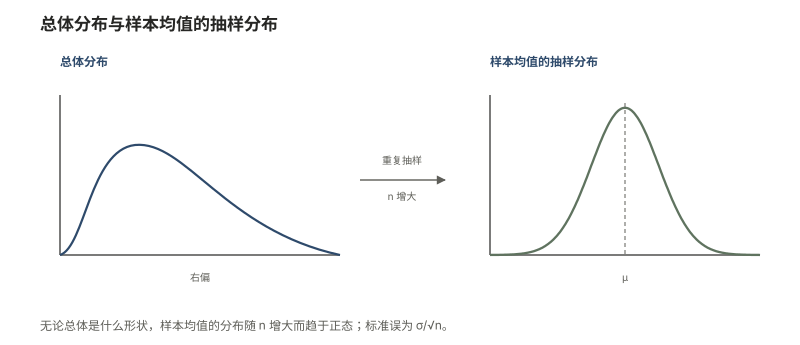

MTH113 · 第 9 章
抽样分布与置信区间
Sampling Distributions & Confidence Intervals
虚线下划线为术语；悬停查看中文、英文与释义，完整词典见“术语”。
本章目录
本讲是概率模型走向统计推断的桥梁：先区分总体分布、样本分布与抽样分布，推出样本均值的期望与标准误，用中心极限定理近似 X̄ 的分布，再用同样的抽样分布构造均值与比例的置信区间。
本章要点
- 参数固定但未知，统计量在观测前是随机变量；统计量的分布叫抽样分布。
- E(X̄) = μ，Var(X̄) = σ2/n，标准误 SE(X̄) = σ/√n。
- 正态总体下 X̄ 精确正态；非正态总体下中心极限定理在 n 大时给出近似正态。
- 标准误减半需要样本量变为 4 倍；n ≥ 30 只是经验起点，强偏态需要更大 n。
- 样本比例 p̂ 的 E = p，SE = √[p(1−p)/n]；正态近似要求成功与失败计数都足够大。
- 置信区间形如“估计值 ± 误差范围”，误差范围 = 临界值 × 标准误。
- 95% 置信区间的正确含义是“方法长期覆盖率约 95%”，不是“这个已观测区间有 95% 概率包含 μ”。
- σ 已知用 z 区间；σ 未知用 t 区间，自由度 n−1。
9.1 从概率模型到统计推断
第 1 到 8 周研究的是“已知模型，求数据出现的概率”。从本讲开始反过来：“已观测一组数据，能对未知总体说什么，有多大不确定性”。这就是统计推断statistical inference。
讲义用电池寿命贯穿：某公司想估计本月生产的笔记本电池平均寿命。总体是本月该厂生产的全部电池；感兴趣的参数是真实平均寿命 μ；样本是实验室测试的 n = 64 块电池；统计量是样本均值 X̄。关键问题是：不同的随机样本会给出不同的 X̄，置信区间正是用来量化这种抽样变异性的。
参数与统计量的区别要再次强调：参数parameter θ 是总体的固定数值，通常未知；统计量statistic T = T(X1, …, Xn) 由样本算出，在观测前是随机变量。既然统计量是随机变量，它就有概率分布，这个分布叫抽样分布。
W9 p.5–7
9.2 三种分布：总体、样本与抽样
| 名称 | 什么在变 | 典型记号 |
|---|---|---|
| 总体分布 | 总体中的个体取值 | X |
| 样本分布 | 一个样本中的观测值 | x1, …, xn |
| 抽样分布 | 重复抽样下的统计量 | X̄, p̂ |
抽样分布是理论分布：它描述“在相同设计下反复抽样，统计量会怎样变化”。它不等于你手上那一个样本的直方图，也不等于总体分布。
讲义的小例子：总体为 2, 4, 6, 8，用有放回简单随机抽样取 n = 2，计算 X̄。样本 (2,2) 给出 2，(2,4) 给出 3，(2,6) 给出 4，…，(8,8) 给出 8。同一总体、不同样本，统计量的值不同，这直观说明 X̄ 是随机变量。
三种分布的“离散程度”也不同：总体分布由 σ 描述；样本分布的经验离散程度是 s；抽样分布的标准差是 σ/√n，通常远小于 σ。把三者混为一谈，就会在置信区间里用错分母。
W9 p.8–9、18
9.3 抽样变异性与 i.i.d. 假设
抽样变异性sampling variability是统计量从一个随机样本到另一个随机样本的自然波动。样本越大，估计通常越稳定；总体变异越小，估计也越稳定。抽样变异性不是测量误差，也不是数据质量差；它是随机抽样本身带来的不确定性。
本讲大多数公式假设 X1, X2, …, Xn 是独立同分布independent and identically distributed（i.i.d.）的随机变量，来自期望 μ、方差 σ2 的总体。独立保证方差可加，同分布保证每个观测有相同的 μ 与 σ2。
实践提醒：数学上正确的置信区间，可能因为样本选择有偏而完全失效。便利抽样、自愿响应、缺失数据都会破坏“随机样本”的前提，此时公式的覆盖率保证不再成立。统计方法的有效性依赖研究设计。
W9 p.10–11
9.4 样本均值的期望与标准误
样本均值定义为 X̄ = (1/n)ΣXi。由期望线性性，
所以 X̄ 是 μ 的无偏估计unbiased estimator：反复抽样时，样本均值的平均等于总体均值。
若各观测独立、方差为 σ2，则
抽样分布的标准差叫标准误standard error。它比总体标准差小 √n 倍：平均把独立的噪声抵消了一部分。
为什么是 √n：若 σ = 12，n = 4 时 SE = 6；n = 16 时 SE = 3；n = 64 时 SE = 1.5。标准误减半需要样本量变为 4 倍，这是样本量规划的“平方根法则”。


绘图提示词
Clean vector two-panel figure: left a wide population distribution of individual values with standard deviation sigma; right a narrower sampling distribution of the sample mean with standard deviation sigma over square root of n, both centred at the same mu. Arrows show that the centre stays at mu while the spread shrinks. Axes labelled x and density. Flat 2D, thin strokes, muted slate blue and warm grey, white background, English labels, no cartoon, no gradient, no shadow.
W9 p.12–14
9.5 正态总体与中心极限定理
若 X1, …, Xn 独立同分布于 N(μ, σ2)，则样本均值精确服从
正态总体下不需要大样本近似，任何 n 都成立。
例：个人完成时间 N(50, 122)，取 n = 36，则 X̄ ~ N(50, 122/36) = N(50, 22)。求 P(48 < X̄ < 52)：标准化得 P(−1 < Z < 1) ≈ 0.6826。
中心极限定理Central Limit Theorem（CLT）：若 X1, …, Xn 独立同分布，均值 μ、标准差 σ，则 n 大时
总体分布不必正态。近似随 n 增大而改善；总体越偏，所需的 n 通常越大。
CLT 改变什么、不改变什么：中心始终是 μ；离散程度按 σ/√n 缩小；形状越来越接近正态；总体分布本身不变。CLT 描述的是样本均值的分布，不是个体观测的分布。
W9 p.15–17、21–22
9.6 CLT 应用与“n 多大才够”
偏态总体例：服务成本的总体右偏，μ = 500，σ = 160，取 n = 64。则 E(X̄) = 500，SE = 160/8 = 20。由 CLT，X̄ ≈ N(500, 202)，P(460 < X̄ < 540) ≈ P(−2 < Z < 2) ≈ 0.9544。尽管个体成本右偏，64 个观测的平均已相当接近正态。
“n 多大才够”没有统一临界值。总体正态时任何 n 都可以；总体大致对称时中等 n 可能够；总体强偏或重尾时需要更大 n。入门课程常把 n ≥ 30 当作经验起点，但讲义明确说它只是 guideline，不是保证，必须同时考虑偏态与异常值。
有限总体与独立性：不放回抽样时观测不完全独立。若样本量小于总体约 10%，独立性近似可接受：
这条10% 条件10% condition在比例与调查抽样中尤其重要。若超过 10%，标准误公式需要有限总体修正，本课程不展开。
W9 p.23–25
9.7 样本比例的抽样分布
设 X 是 n 次独立 Bernoulli 试验中的成功数，X ~ Bin(n, p)，样本比例 p̂ = X/n。则
当 n 大时，p̂ ≈ N(p, p(1−p)/n)。正态近似通常要求
因为 p 未知，实践中常用 np̂ ≥ 10 与 n(1−p̂) ≥ 10 检查。条件要求“期望成功数与期望失败数都足够大”，否则二项分布太偏，正态近似很差。
例：p = 0.32 的顾客偏好在线支持，n = 200。E(p̂) = 0.32，SE(p̂) = √[0.32(0.68)/200] ≈ 0.03298。求 P(0.28 < p̂ < 0.36)：
注意 p̂ 的标准误含 p，而 p 未知；区间估计时要用 p̂ 替代，得到估计标准误。
W9 p.26–28
9.8 置信区间的形式与置信水平的正确含义
点估计point estimate用一个数估计参数，例如 x̄ = 12.8 估计 μ。区间估计interval estimate给出一段合理取值，例如 (11.3, 14.3)。区间比单点更诚实地表达不确定性。
本课程大多数置信区间形如
临界值由抽样分布与置信水平决定；标准误衡量估计量的抽样变异性。
置信水平的正确解释是本章最重要的概念。95% 置信区间不表示“这个已观测区间包含 μ 的概率是 95%”。数据观测后，区间固定、μ 固定，概率只能是 0 或 1。正确说法：若反复使用同样的抽样方法与区间公式，长期约有 95% 的区间会包含真实参数。95% 描述的是方法的长期覆盖率。
Clean vector plot showing twenty horizontal confidence intervals stacked vertically against a vertical dashed line at the fixed population mean mu; about nineteen intervals cross the line and one misses it, illustrating long-run coverage. Intervals drawn as thin horizontal segments with a centre dot. Axes labelled parameter scale and sample number. Flat 2D, thin strokes, muted slate blue and warm grey, one interval highlighted in muted terracotta, white background, English labels, no cartoon, no gradient, no shadow.
常用临界值：90% 用 1.645，95% 用 1.960，99% 用 2.576。置信水平越高，临界值越大，区间越宽。
W9 p.32–36
9.9 均值的 z 区间（σ 已知）
若 X̄ 近似正态且总体标准差 σ 已知，则
由 P(−zα/2 < Z < zα/2) = 1 − α 反解，得 100(1−α)% 置信区间
条件：简单随机样本；总体正态或 n 大；σ 已知。
例：n = 100 名机组人员，平均辐射暴露 x̄ = 219 mrem，已知 σ = 35 mrem。95% 区间：
解释：我们以 95% 的把握认为，所关心总体的真实年平均辐射暴露在 212.14 到 225.86 mrem 之间；这里的 95% 指所用方法的长期覆盖率。
推导的关键是“随机区间”而非“已观测区间”：在抽样前，X̄ 随机，区间 X̄ ± 1.96σ/√n 以 0.95 的概率覆盖固定的 μ；抽样后代入具体 x̄，区间变成固定数，概率陈述随之转为置信度陈述。
W9 p.37–40
9.10 σ 未知与 t 区间
实际中总体标准差很少已知，通常用样本标准差 s 估计。标准化统计量变为
若总体正态，则 T 服从自由度 df = n − 1 的 t 分布t distribution。用 s 替代 σ 引入了额外不确定性，所以 t 分布尾部比标准正态更厚；df 越大，t 分布越接近 N(0,1)。
t 分布对称、中心为 0，由自由度索引。小样本时尾部厚的影响明显；大样本时 t 与 z 几乎相同。
100(1−α)% 的 t 区间为
条件：简单随机样本；总体近似正态或 n 大；小样本时不能有严重异常值。
例：n = 25，x̄ = 12.8 分钟，s = 3.6 分钟，95% 区间，df = 24，t0.025,24 = 2.064：
另一个综合例：n = 49，x̄ = 27.4，s = 5.2，t0.025,48 ≈ 2.01，区间 27.4 ± 2.01(5.2/7) = 27.4 ± 1.49 = (25.91, 28.89)。
| 情形 | 方法 | 区间 |
|---|---|---|
| σ 已知，总体正态或 n 大 | z | x̄ ± zα/2σ/√n |
| σ 未知，总体正态或 n 大 | t | x̄ ± tα/2,n−1s/√n |
| 小样本且强偏/异常值 | 两者都不稳妥 | 改用其他方法或收集更多数据 |
W9 p.41–45
9.11 比例的置信区间与误差范围
对大样本、满足正态近似条件的比例，近似 100(1−α)% 置信区间为
条件：随机样本；独立或 10% 条件；成功与失败计数都至少 10。
例：n = 200 名顾客中 86 人偏好在线支持，p̂ = 86/200 = 0.43。95% 区间：
解释：我们以 95% 的把握认为，全体顾客中偏好在线支持的真实比例在 0.361 到 0.499 之间。参数是总体比例，区间基于一个观测样本，95% 描述方法的长期可靠性。
误差范围margin of error是区间的半宽：ME = 临界值 × 标准误。均值（σ 已知）时为 zα/2σ/√n；比例时为 zα/2√[p̂(1−p̂)/n]。
什么使区间变宽：置信水平更高；总体/样本变异更大；样本量更小；小样本用 t 而非 z。样本量增大使区间变窄，但精度与置信度在固定 n 下互相牵制。
W9 p.46–50
9.12 样本量、常见误读与报告
估计均值时，若希望误差范围不超过 E，解 E = zα/2σ/√n：
结果一律向上取整。例：95% 置信、σ = 10、E = 2，n = [1.96(10)/2]2 = 96.04，取 97。
估计比例时，
若有计划值 p* 就用它；没有则用 p* = 0.5，因为 0.5 使 p*(1−p*) 最大，给出最保守（最大）的样本量。例：95%、E = 0.04、无先验估计，n = 1.962(0.25)/0.042 = 600.25，取 601。
四种常见误读：说“95% 的样本数据落在区间内”；说“固定参数落在这个已观测区间的概率是 95%”；说“区间越宽数据越好”；说“置信区间消除了全部不确定性”。置信区间只描述参数的合理取值，不描述个体观测的分布。
好的报告包含：估计的参数；样本统计量与样本量；置信水平；区间与单位；结合情境的解释；条件或局限。模板：“基于容量为 n 的随机样本，总体均值/比例的 95% 置信区间为 …”。
W9 p.51–55